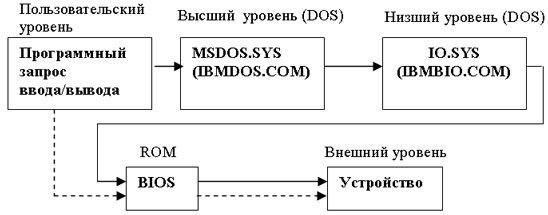

Система BIOS (Basic Input/Output System - базовая система ввода/вывода) находится в ROM (ПЗУ) и управляет всеми прерываниями в системе.
Начальный адрес ROM - FFFF0H.
Напомним, что ее основное назначение (помимо размещения BIOS) - поддержка процедур начальной загрузки: выполнение различных проверок, загрузка данных с системной дискеты и т.д.
При включении компьютера процессор устанавливает в регистре CS значение FFFFH, а в регистре IP - 0000H.
Таким образом, первая выполняемая команда находится по адресу FFFFH:0000H или FFFF0H, что является точкой входа в BIOS.
BIOS проверяет различные порты компьютера для определения и инициализации подключенных устройств.
Затем он создает в начале памяти по адресу 00000H таблицу векторов прерываний, которая содержит адреса обработчиков прерываний, и выполняет две операции INT 11H (запрос списка присоединенного оборудования) и INT 12H (запрос размера физической памяти).
Следующим шагом BIOS определяет, имеется ли на диске или дискете операционная система DOS.
Если обнаружена системная дискета, то BIOS выполняет прерывание INT 19H для доступа к первому сектору диска, содержащему блок начальной загрузки.
Этот блок представляет собой программу, которая считывает системные файлы IO.SYS (или IBMBIO.COM), MSDOS.SYS (или IBMDOS.COM) и COMMAND.COM с диска в память, после чего компьютер готов к работе (загружена операционная система).
Модуль MSDOS.SYS (IBMDOS.COM) содержит средства управления файлами и ряд сервисных функций, таких как блокирование и деблокирование записей.
Порядок выполнения DOS-прерывания следующий.
Когда пользовательская программа выдает запрос на прерывание (например, INT 21H), то в модуль MSDOS.SYS (IBMDOS.COM) через регистры передается определенная информация.
Затем модуль MSDOS.SYS (IBMDOS.COM) транслирует эту информацию в один или несколько вызовов IO.SYS (IBMBIO.COM), который, в свою очередь, вызывает соответствующую подпрограмму BIOS.
